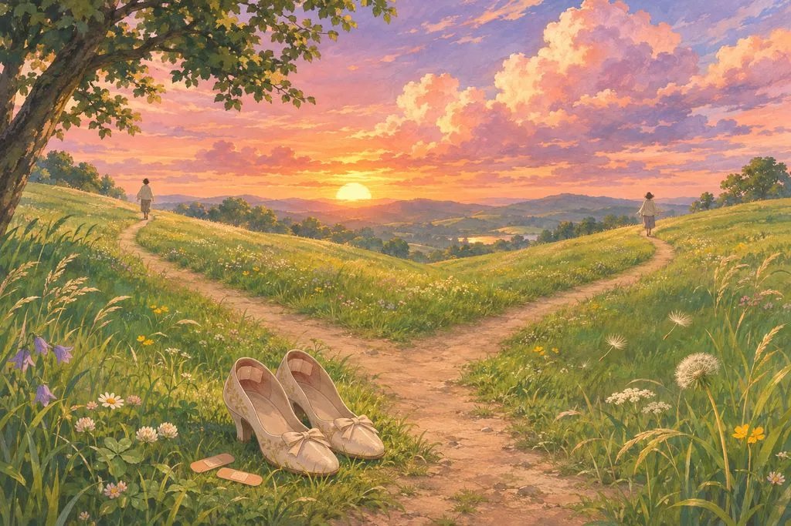

РАЗВИЛКАСтатья психолога
Точка рождения
Почему мы привыкли оплакивать конец отношений как личный крах — и как увидеть в разрыве не поражение, а акт сострадания и точку рождения
В нашей культуре для начала отношений предусмотрены тосты, шампанское и пожелания долгой дороги, а для их конца — только траурная тишина и неловкое сочувствие. Расставание принято переживать как маленькую смерть, личную несостоятельность, крушение всего, во что было вложено столько лет.
С этой болью бессмысленно спорить: разрыв действительно способен разобрать человека до основания. Но что, если дело не в самой боли, а в оптике, через которую мы на неё смотрим? Что, если увидеть в расставании не позорный финал, а точку торжества?
Это похоже на роды. Процесс, в котором много боли, страха и невыносимого физического дискомфорта, но который по своей сути является не разрушением, а актом рождения. Из прежнего слияния на свет появляются двое — два абсолютно новых, качественно иных человека. И держится этот переход на трёх вещах: прекращении бессмысленного страдания, открытии новых возможностей и честном взгляде на реальность.
1Туфли, в которых невозможно идти
Почти у каждого в шкафу однажды случалась потрясающая пара обуви. Любовь с первого взгляда, безупречная посадка на мягком ковре в магазине. Но проходит неделя, другая — колодка начинает давить, кожа натирает до крови, каждый шаг превращается в испытание.
В этот момент мы редко спокойно признаём очевидное: форма этой стопы и форма этой колодки просто не совпадают. Вместо этого начинается отчаянная спасательная операция. Мы клеим пластыри, которые скатываются через полчаса, натягиваем плотные носки, которые протираются до дыр, меняем походку — лишь бы доказать, что покупка была не зря.
Точно так же мы проживаем страдание от «неподходящести» в отношениях — и почти мгновенно проваливаемся в поиск виноватого. Если ушли от меня — значит, со мной что-то не так, я бракованный. Если мне невыносимо больно — значит, партнёр оказался плохим, холодным, неправильным. Эта тесная, замкнутая на себе оптика способна запереть двоих в многолетнем мучении.
Но стоит подняться на шаг выше и посмотреть на отношения как на живую систему, картина резко меняется.
В близости мы связаны сообщающимися сосудами. Представьте, что ваш партнёр в этом союзе раз за разом больно бьётся головой о люстру, а вы спокойно отвечаете: «ох как жаль, бедный. ты как? ты же все еще можешь меня любить с шишкой на лбу? Просто меня все устраивает. И люстра нравится и то как ты за мной ухаживаешь. Не хотелось бы что-то менять. Может начнешь наклоняться?». В эту секунду стоит задать себе один беспощадный вопрос: кого именно вы сейчас любите? Живого человека напротив — или ту питательную, тёплую среду, которую он для вас бесперебойно обеспечивает?
Отношения не могут быть комнатой, где одному уютно, пока другой медленно замерзает у стены. Здесь действует простое правило: либо подходят оба, либо не подходит никто. Если одной части системы постоянно больно, система нежизнеспособна. И тогда расставание перестаёт быть предательством. Оно становится актом глубокого сострадания — решением прекратить взаимную пытку и выбрать свободу для жизни, а не бесконечное выживание рядом.
2Жить жизнь красным
Именно в этой точке, когда отступает шум взаимных упрёков, открывается горизонт, о котором в разгар боли почти никто не думает.
Вступая в настоящую близость, мы неизбежно позволяем другому оставить на нас след. Отношения перекрашивают нас изнутри. Представьте, что до этой встречи вы всю жизнь были условно «зелёным»: знали свои автоматические реакции, привычные вкусы, предсказуемый маршрут. Но в глубоком контакте с этим человеком вы стали «красным».
Вы никогда раньше не проживали свою жизнь красным — не принимали так решений, не ходили так на свидания, не смотрели на мир из этого оттенка. После разрыва первый импульс почти всегда один: в панике оттереть с себя чужую краску и любой ценой вернуться в прежнее, «безопасное» состояние.
Но как прежде уже не будет — и в этом скрыт главный подарок. Если сменить взгляд жертвы на взгляд исследователя, вместо пустоты вдруг обнаруживается бездна любопытства. Какой я теперь? Как звучит мой новый голос? Чего я захочу, если попробую шагнуть в мир этим обновлённым собой? Жизнь в точке расставания не обрывается — она меняет плотность и разворачивается с совершенно иной интенсивностью.
3Крепость или закат
И всё же мы упрямо держимся за странную мерку: успешными считаются только те отношения, которые дотянули до финальных титров. Любое завершение автоматически записывается в графу «неудача».
Мы привыкли относиться к союзу как к капитальной стройке: заложили фундамент, возвели толстые стены, заперлись внутри и подписались сидеть там до самой старости. Стоит этому зданию дать трещину и рухнуть — и мы остаёмся сидеть на обломках с тяжёлым чувством, что провалили главный экзамен жизни.
А что, если отношения — это вообще не недвижимость? Что, если они больше похожи на закат?
не в собственностиИван Айвазовский, «Закат» — общественное достояние
Закат — не вещь, которую можно купить в собственность. Это живой процесс, вспыхивающий в конкретном времени, воздухе и свете. Никому не придёт в голову прибить закат гвоздями к небу или потребовать, чтобы он длился вечно. Более того, стоит попытаться поставить его на паузу и присвоить — и вы мгновенно перестанете его видеть. Чтобы по-настоящему пережить его красоту, требуются только две вещи: полное присутствие и тихое согласие с тем, что однажды небо потемнеет.
Возможно, нам пора изменить сам язык, на котором мы говорим о конце любви. Научиться желать друг другу вовремя случившихся, ясных и чистых расставаний с тем же трепетом, с каким мы желаем счастья в день свадьбы.
Если разрыв уже вошёл в вашу систему, спорить с ним поздно: самим фактом своего появления он подтверждает, что вы больше не совпадаете. И найти в себе честность признать это, разжать руки и позволить процессу завершиться — вовсе не слабость и не позорный проигрыш.
Это взрослая смелость отпраздновать тот день, когда два неподходящих друг другу человека наконец перестали наносить друг другу раны. И шагнуть в новое начало.